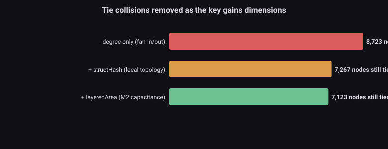
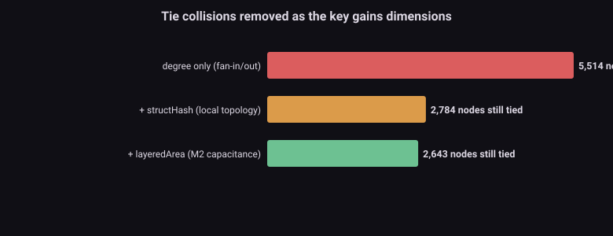
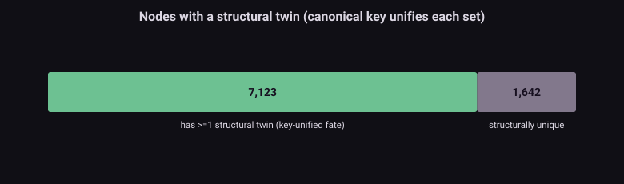
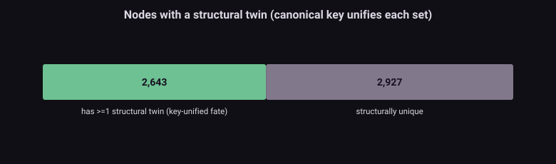

The problem問題 A tie broken by an accident用偶然裁決的平手
When the engine must order two events in the same settle wave, or pick a winner in a floating group that is a dead heat, it uses the node number. The number is the order the node was loaded from a file — physically meaningless. Real silicon resolves the same tie by continuous-time physics; the engine resolves it by an alphabet. The accuracy campaigns met this as the D-class lottery: the twins u7/u8 (two instances of the same 74LS368) where one passed and the other broke on one test, open-bus bytes that flipped, and the nastiest property of all — an instrument probe or a netlist patch, by shifting ids, could re-roll the entire outcome. That last one made every graph change hazardous.
當引擎必須為同一 settle 波裡的兩個事件排序、或在勢均力敵的浮接群裡挑贏家,它用節點編號。那個編號是節點從檔案被載入的順序 —— 物理上毫無意義。真實矽用連續時間物理裁決同一個平手;引擎用字母順序裁決。精度戰役遇到它的形式是 D 類樂透:孿生 u7/u8(同一顆 74LS368 的兩個實例)在一個測試上一個過一個壞、open-bus 位元組翻轉,以及最麻煩的性質 —— 一個儀器探針或一個網表補丁,靠移動 id,就能重擲整個結果。最後這點讓每一次圖變更都變得危險。
M7's mechanism is a load-time canonical renumbering: replace "id = load order" with a deterministic key from physics + structure. Two independent wins: identical circuits get identical keys (twins share a fate — the lottery is gone); and a graph change no longer re-rolls the global order, because ids follow structure, not file position (so future netlist patches and instruments become safe operations). Cost: near zero — one load-time sort, the hot path unchanged.
M7 的機制是載入期正準重編號:把「id = 載入順序」換成一把來自物理 + 結構的確定性鍵。兩個獨立收益:同構電路拿到同鍵(孿生同命 —— 樂透消失);而圖變更不再重擲全域順序,因為 id 跟著結構、不跟檔案位置(所以未來的網表補丁與儀器變成安全操作)。成本:近乎零 —— 一次載入期排序,熱路徑不變。
The key那把鍵 Four fields, physics first四個欄位,物理優先
key(node) = ( class , layeredArea , structHash , degree )- class — the prune/locality class, kept first so the +3.56% class-major locality win is preserved; the canonical order only reorders within a class.
- class —— prune/locality 類,放第一以保留 +3.56% 的 class-major locality win;正準排序只在類內重排。
- layeredArea — the M2 capacitance proxy (polygon area × layer weight): a physical, load-order-independent magnitude.
- layeredArea —— M2 電容代理(多邊形面積 × 層權重):一個物理的、與載入順序無關的量。
- structHash — a Weisfeiler-Lehman refinement of local topology: a node's neighborhood signature, so structurally identical nodes collide and different ones separate.
- structHash —— 局部拓撲的 Weisfeiler-Lehman 精煉:節點的鄰域指紋,讓結構相同的節點碰撞、不同的分開。
- degree — transistor fan-in/out, the final cheap tiebreak.
- degree —— 電晶體 fan-in/out,最後的便宜裁決。
Results結果 The key resolves ties — and the two dies have different characters鍵解掉平手 —— 而兩顆晶粒性格不同
| Nodes still tied (need id-order tiebreak)仍平手的節點(需 id 順序裁決) | 2C02 (PPU) | 2A03 (CPU) |
|---|---|---|
| degree only只有 degree | 8,723 | 5,514 |
| + structHash (topology)+ structHash(拓撲) | 7,267 | 2,784 |
| + layeredArea (M2 capacitance)+ layeredArea(M2 電容) | 7,123 (−18%) | 2,643 (−52%) |
The PPU/CPU contrast echoes M1. The CPU's ties collapse by half once structure and area enter, because the 2A03 is irregular — hand-drawn logic, few exact repeats. The PPU resists: 7,123 nodes still share a key. That is not a weak key — it is the die telling the truth. The 2C02 is built from big replicated cell arrays (the biggest canonical groups are 590, 582, 360… nodes — the OAM, the palette, the shift registers), and those cells are structurally interchangeable. For them, sharing a key is exactly right: the canonical rule gives every copy in an array one fate, which is what the lottery was silently denying them.
PPU/CPU 的對比呼應 M1。CPU 的平手在結構與面積進場後砍半,因為 2A03 不規則 —— 手工畫的邏輯、少有精確重複。PPU 頑抗:7,123 個節點仍共享一鍵。那不是鍵太弱 —— 是晶粒在說實話。2C02 由大型複製 cell 陣列組成(最大的正準群是 590、582、360⋯ 節點 —— OAM、palette、移位暫存器),而那些 cell 本來就結構可互換。對它們,共享一鍵正是對的:正準規則給陣列裡每個副本一個命運,而那正是樂透默默剝奪它們的。




A subtle finding一個微妙的發現 Name symmetry is not structural symmetry名稱對稱不是結構對稱
One might expect a data bus — _db0…_db7 — to be eight identical twins. The census says otherwise: of 188 name-symmetric families on the 2C02, only 15 have a single canonical key; _db# splits into 9 keys, _io_db# into 8. This is correct, not a failure. Bit 0 of a bus is wired to different neighbors than bit 7 (carry chains, boundary logic, address decode), so the bits are not structurally interchangeable, and a canonical key must distinguish them — otherwise it would wrongly force db0 and db7 to share a fate. The genuine twins are the module-instance replicas (u7/u8, from M5) and the intra-array cells, which the key does unify. Name symmetry was a tempting shortcut; the structure refused it, and the structure is right.
有人會以為資料匯流排 —— _db0⋯_db7 —— 是八個相同的孿生。普查說不是:2C02 上 188 個名稱對稱家族,只有 15 個有單一正準鍵;_db# 裂成 9 個鍵、_io_db# 裂成 8 個。這是對的、不是失敗。匯流排的第 0 位元接的鄰居和第 7 位元不同(進位鏈、邊界邏輯、位址解碼),所以位元不是結構可互換,正準鍵必須區分它們 —— 否則它會錯誤地強迫 db0 和 db7 同命。真正的孿生是模組實例複製(u7/u8,來自 M5)與陣列內 cell,那些鍵確實統一了。名稱對稱是個誘人的捷徑;結構拒絕了它,而結構是對的。
Honest limits誠實極限 What this key cannot say這把鍵說不了的事
- Consistent ≠ correct. A canonical key removes the lottery (identical inputs → identical fate); whether that shared fate matches silicon depends on whether the key's fields correlate with the physics that actually breaks the tie. Area is a proxy; it misses path resistance and drive.
- 一致 ≠ 正確。正準鍵移除樂透(相同輸入 → 相同命運);那個共享命運是否符合矽,取決於鍵的欄位是否與真正裁決平手的物理相關。面積是代理;它漏掉路徑電阻與驅動。
- Intra-array cells still tie. Two identical OAM cells get the same key by design — so between them the tiebreak still needs one more field (position), which the key omits. For truly interchangeable cells that is harmless (they behave identically); for the rare array with a boundary asymmetry it is a residue.
- 陣列內 cell 仍平手。兩個相同的 OAM cell 依設計拿到同鍵 —— 所以它們之間的裁決還需要多一個欄位(位置),而鍵省略了它。對真正可互換的 cell 這無害(它們行為相同);對罕見有邊界不對稱的陣列則是殘留。
- Checksum changes by design. Re-keying the arbitration changes the golden checksum — which is why M7 lives in the S1a fork, re-baselining, not on the golden S1 engine.
- checksum 依設計會變。把仲裁重新編鍵會改金 checksum —— 這正是 M7 活在 S1a 分支、重定基準,而不在黃金 S1 引擎上的原因。